Potensi Desa
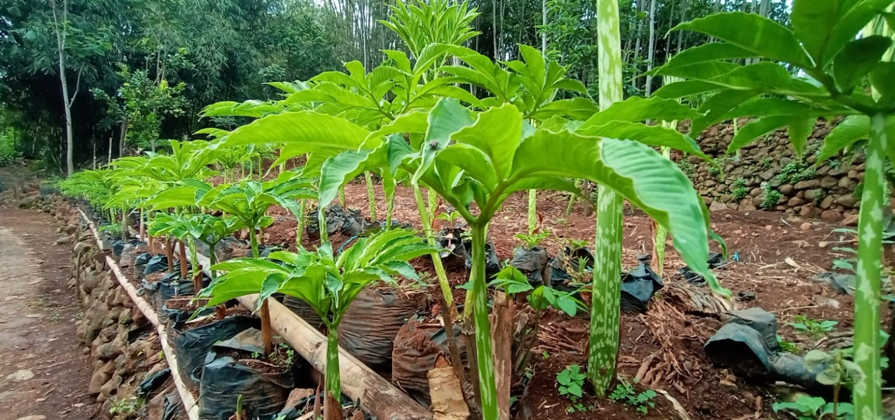
PertanianPorang
Porang berkualitas unggul dengan kandungan glukomanan tinggi, dibudidayakan oleh petani desa secara berkelanjutan dan bernilai jual tinggi.
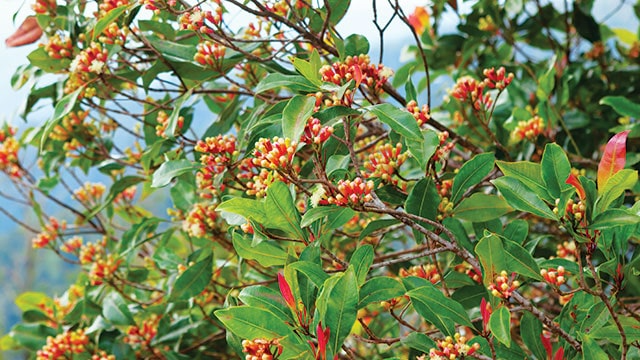
PertanianCengkeh
Cengkeh berkualitas tinggi dengan aroma tajam alami, dibudidayakan secara teliti oleh petani desa menggunakan praktik pertanian berkelanjutan.
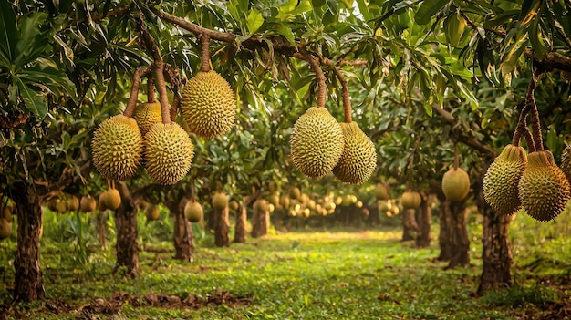
PertanianDurian
Durian unggul berkualitas premium dengan perawatan intensif dan tanpa bahan kimia berbahaya, dibudidayakan oleh petani lokal desa.
 Pertanian
Pertanian
Rambutan
Rambutan unggulan ditanam secara alami tanpa bahan kimia berbahaya. Dihasilkan oleh petani desa dengan praktik budidaya ramah lingkungan.
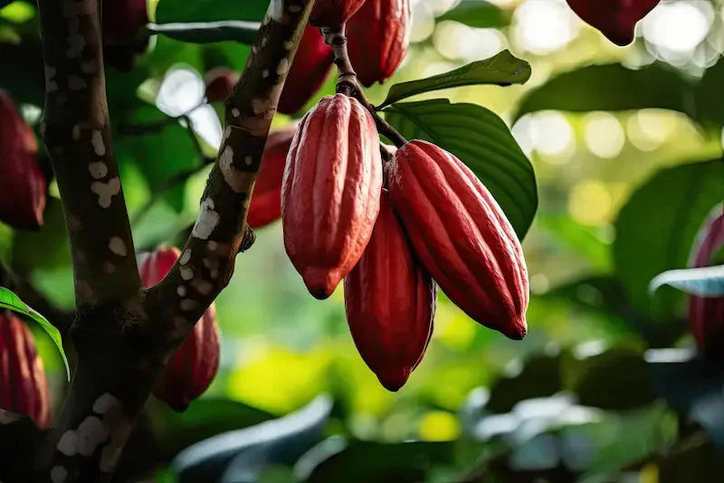
PertanianCoklat
Tanaman coklat pilihan dengan mutu biji terbaik, dibudidayakan secara alami oleh petani lokal berpengalaman.
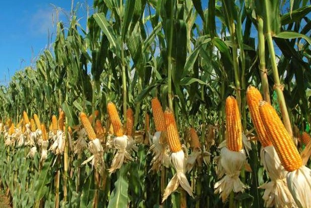
PertanianJagung
Jagung unggulan berkualitas prima tanpa penggunaan bahan kimia berbahaya, dibudidayakan oleh petani desa secara berkelanjutan.
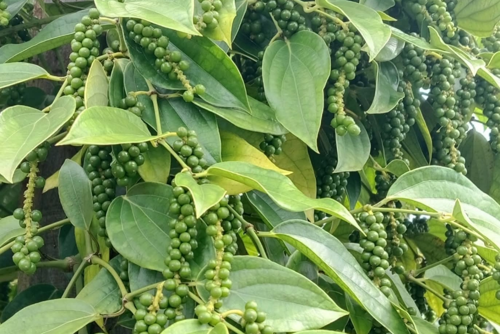
PertanianMerica
Merica unggulan beraroma tajam dan pedas alami. Dibudidayakan petani lokal, berkualitas tinggi dan bernilai jual.
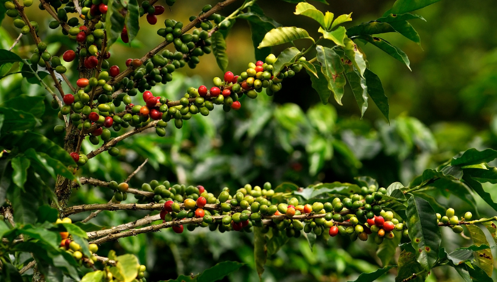
PertanianKopi
Kopi berkualitas dengan aroma khas dan cita rasa kuat, dibudidayakan petani lokal untuk hasil panen unggul bernilai tinggi.
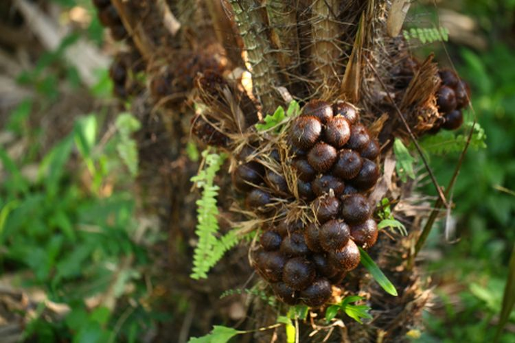
PertanianSalak
Salak berkualitas dengan aroma khas dan cita rasa kuat, dibudidayakan petani lokal untuk hasil panen unggul bernilai tinggi.
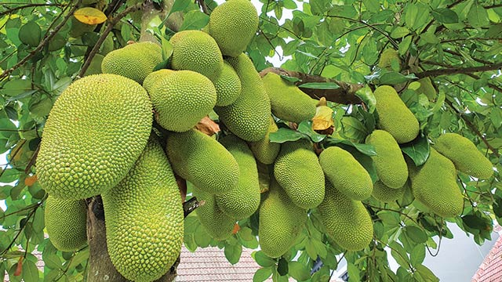
PertanianNangka
Nangka unggul berbuah lebat, manis alami, dan berdaging tebal. Dibudidayakan petani lokal untuk kualitas terbaik dan peluang usaha menjanjikan.
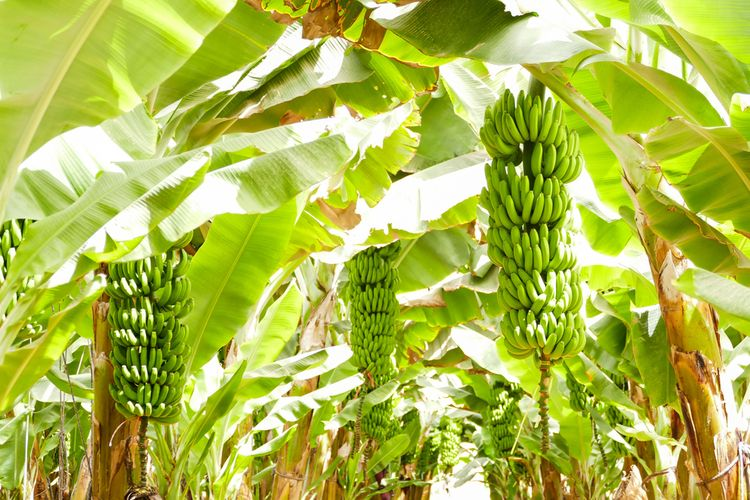
PertanianPisang
Pisang berkualitas dengan rasa manis alami, dibudidayakan petani lokal secara berkelanjutan. Segar, sehat, dan cocok untuk konsumsi maupun usaha olahan.
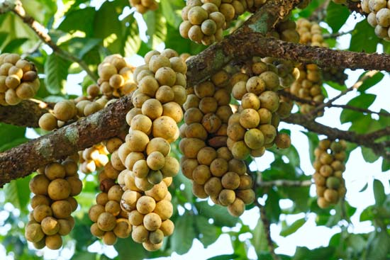
PertanianLangsat
Langsat manis segar berdaging tebal, ideal untuk konsumsi dan peluang usaha. Dirawat petani lokal secara optimal, menghasilkan panen berkualitas dan bernilai tinggi.
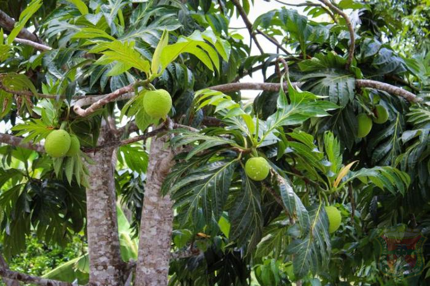
PertanianSukun
Sukun berkualitas dengan daging tebal dan tekstur lembut, ideal untuk aneka olahan bernilai jual. Dibudidayakan petani lokal secara optimal untuk hasil panen unggul dan menguntungkan.
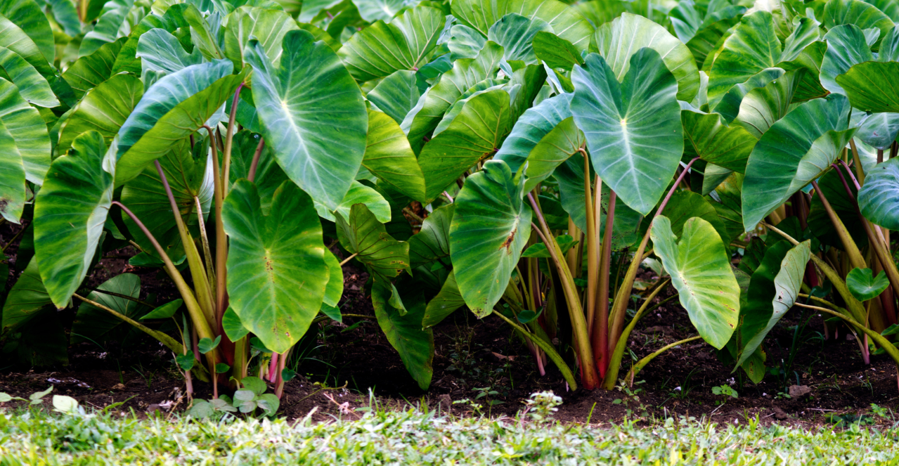
PertanianTalas
Talas berkualitas dengan umbi besar dan rasa gurih alami, cocok untuk konsumsi maupun peluang usaha. Dibudidayakan petani lokal dengan perawatan optimal untuk hasil panen bernilai jual tinggi.